#299 Al Pacino - Scarface
Alternativ: Scarface
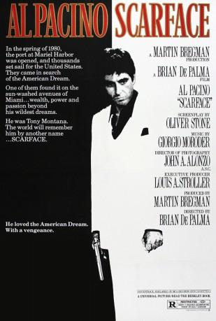 
 IMDB-Wertung: 8.3 / 10
IMDB-Wertung: 8.3 / 10  IMDB-TOP-Platzierung: 106
IMDB-TOP-Platzierung: 106  Metascore: 65
Metascore: 65 
1980 wandert der politisch verfolgte Kubaner Tony Montana nach Florida in den USA aus. Bald wird er seinem Job als Tellerwäscher überdrüssig und beteiligt sich an einem Kokainschmuggel. Der mächtige Drogenhändler Alejandro Sosa findet Gefallen an dem zielstrebigen Kubaner und integriert ihn in seine dunklen Machenschaften. Mit starkem Willen und kompromisslosem Handeln bahnt sich Tony Montana schnell den Weg an die Spitze. Als er jedoch dem Größenwahn verfällt, fühlt sich Sosa bedroht und möchte Montana beseitigen lassen.
Jahr: 1983
Dauer: 170 Minuten
FSK: 18
Land: USA Studio: Universal PicturesTonspuren:
Untertitel: Deutsch,
Auflösung: 1080p (1920×1080) Größe: 25702 MB
Genre: Krimi, Drama
Regisseur:  Brian De Palma
Brian De Palma
Drehbuch: Oliver Stone, Howard Hawks, Ben Hecht, Armitage Trail
Soundtrack: Giorgio Moroder
Darsteller:
 Al Pacino als Tony Montana
Al Pacino als Tony Montana- Steven Bauer als Manny Ribera
- 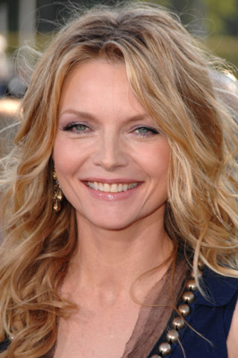 Michelle Pfeiffer als Elvira Hancock
- 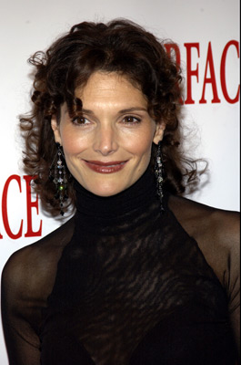 Mary Elizabeth Mastrantonio als Gina Montana
- 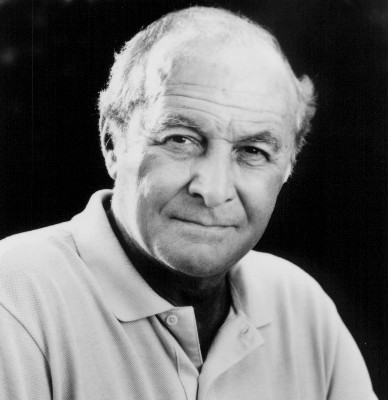 Robert Loggia als Frank Lopez
- 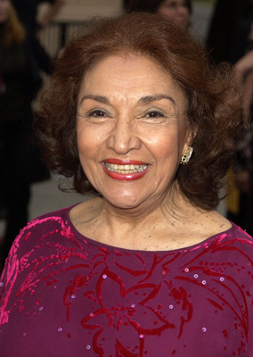 Miriam Colon als Mama Montana
- F. Murray Abraham als Omar Suarez
- Paul Shenar als Alejandro Sosa
- 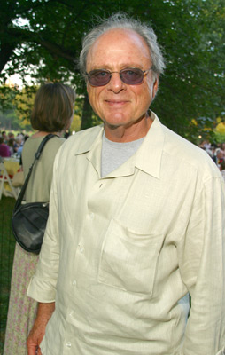 Harris Yulin als Mel Bernstein
- 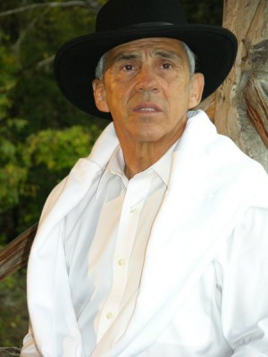 Pepe Serna als Angel
- Dennis Holahan als Jerry The Banker
- 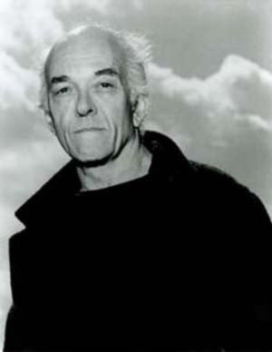 Mark Margolis als Alberto The Shadow
- Richard Belzer als M.C. at Babylon Club
- Tony Perez als Immigration Officer #2
- Rene Carrasco als Shooter
- 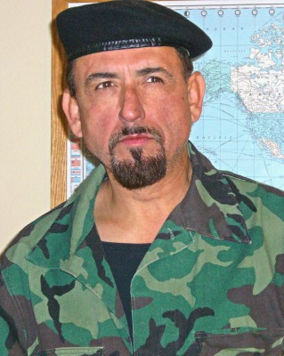 Gary Carlos Cervantes als Shooter #1
- 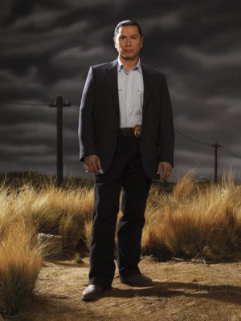 Gregory Cruz als Shooter #2
- Ronald G. Joseph als Car Salesman
- 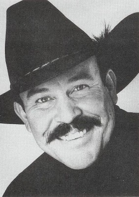 Mike Moroff als Gaspar's Bodyguard
- Manuel Padilla Jr. als Kid #2
- Angela Aames als Woman at Babylon Club
- Lee Benton als Woman at Babylon Club
- Lana Clarkson als Woman at Babylon Club
- Margo Kelly als Woman at Babylon Club
- Ava Lazar als Woman at Babylon Club
- Margaret Michaels als Woman at Babylon Club
- Marcia Wolf als Woman at Babylon Club
- 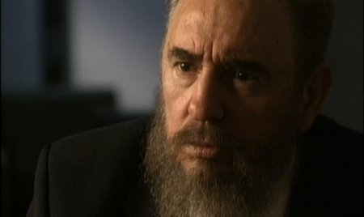 Fidel Castro als Himself , archive footage, uncredited
 Charles Durning als Immigration Officer , uncredited
Charles Durning als Immigration Officer , uncredited- 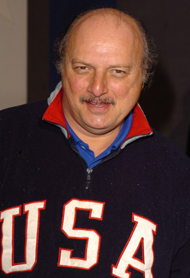 Dennis Franz als Immigration Officer , uncredited
- 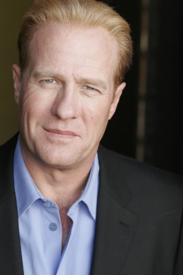 Gregg Henry als Charles Goodson , uncredited
- 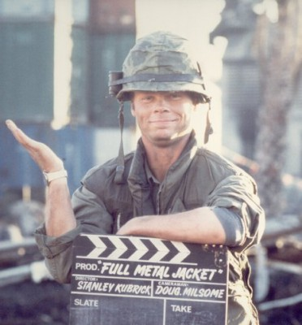 Kevyn Major Howard als Extra , uncredited
- Brett Ratner als Boy Lying on Raft in Pool , uncredited
- Randall Rutledge als Night Club Patron , uncredited
- Marcus Shirock als Boy at Pool , uncredited
- Max Wasa als Dancer - LaLa , uncredited
- Ángel Salazar als Chi Chi
- Arnaldo Santana als Ernie
- Michael P. Moran als Nick The Pig
- Al Israel als Hector The Toad
- Michael Alldredge als Sheffield
- Ted Beniades als Seidelbaum
- Paul Espel als Luis
- John Brandon als Immigration Officer #3
- Garnett Smith als Immigration Officer #1
- Loren Almaguer als Dr. Munoz
- Gil Barreto als Cuban Refugee
- Heather Benna als Gutierrez Child
- Sue Bowser als Miriam
- Tina Leigh Cameron als Saleslady
Datei: X:\FSK18-1900-1999\Al Pacino - Scarface (1983, FSK18, 1920x1080).mkv seit 16.02.2015
Festplatte: FSK18
 Es gibt insgesamt 108 Filme in der Gruppe 'FSK18-1900-1999'
Es gibt insgesamt 108 Filme in der Gruppe 'FSK18-1900-1999'